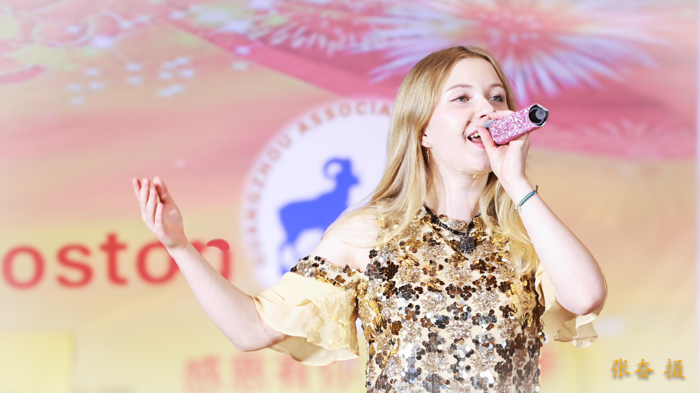
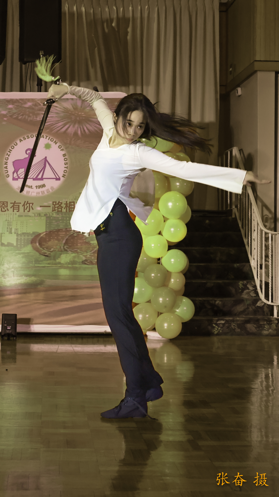

2025 年 11 月22日，波士顿秋意正浓，温暖的灯光与节日的喜悦在意大利风情宴会厅中交织成一片。当晚，波士顿广州联谊会 2025 感恩节晚会盛大举行。来自麻州及周边地区的数百位嘉宾、侨界代表、文艺团队及社区友人齐聚一堂，在这温馨的节日里共叙乡情、传递祝福、凝聚力量。本次晚会以其精湛节目、高水准舞台呈现、严谨流畅的流程设计赢得满堂喝彩，被不少来宾称为“侨界年度最佳盛会之一”。

高水平中外精英团队联袂献艺
今年的感恩节晚会最大的亮点之一，便是节目阵容的整体“升级”。晚会邀请了多支本地及国际背景的专业团队参与，包括声乐、器乐、舞蹈、戏曲、武术与融合作品在内，呈现了跨文化、跨风格的综合演出。 节目内容既有传统东方韵味，也有现代舞台艺术的活力，更融入了西方古典与世界音乐元素，让整台演出层次丰富、亮点不断。

流程紧凑、节奏流畅
节目编排紧凑，主持人串场自然得体，从开场仪式到结尾会歌发布，整场晚会节奏顺畅、衔接精准、气氛始终热烈。
无论是嘉宾致辞、文艺表演、幸运抽奖，还是会员互动环节，都设置得恰到好处，使观众始终保持兴致与参与度。
许多来宾特别称赞：“这是一场没有冷场、没有等待、没有尴尬的高质量晚会。”

新人作品《诗句》惊艳亮相
新人组合呈现“歌声＋剑舞”浪漫融合
当晚最令人津津乐道的节目之一，是新人组合带来的歌曲《诗句》与爱的宣言。
随着柔美的旋律响起，歌声清澈动人，而舞台中央飒爽的剑舞与暖意融融的文辞相互交织，力量与温柔并存、浪漫与英气共存。
这段“跨形式艺术表达”一经呈现，便收获了热烈掌声。观众纷纷表示，这个节目不仅创意十足，也极具舞台感染力，让人眼前一亮，更为晚会增添了浪漫气息。

主持人惊喜献唱《我的太阳》
意大利宴会厅内氛围瞬间升华
本次晚会的主持团队不仅专业稳健，更带来了意想不到的惊喜。主持人在串场中途深情演唱意大利名曲《我的太阳》，歌声高亢明亮、感染力十足，与所在的意大利风情宴会厅相得益彰。
现场的意大利籍场地负责人听后激动不已，连连表示“惊喜又感动”，为节目水准和文化穿越式的和谐表达点赞。这一幕成为当晚最具“国际友好气息”的瞬间之一。

三支广联队伍首次亮相
礼仪队、旗袍队、合唱团表现亮眼
今年的感恩节晚会，也是波士顿广州联谊会三个文化团队的“首秀”舞台：
礼仪队大方优雅，承担起重要的接待、仪式任务；
旗袍队首次登台亮相，端庄典雅，成为全场焦点；
合唱团以整齐的声线和饱满情绪完成了他们的舞台处女作。
三支队伍展示了社团在组织力、文化力和凝聚力上的全面提升，也让更多会员看到“参与有舞台、付出有回报”的组织文化。

广州联谊会专属会歌首次发布
压轴登场，全场感动大合唱
在万众期待中，广州联谊会专属会歌在晚会尾声首次正式发布。伴随乐声响起，大屏播放着协会发展历程、服务社区的影像，合唱团与现场来宾共同唱响这首象征归属感、凝聚力与文化认同的歌曲。
这支会歌不仅旋律大气明亮，更承载着广州乡亲的团结精神与对美好未来的共同愿景。作为晚会压轴节目，会歌发布取得圆满成功，现场不少观众热泪盈眶，纷纷表示“这是属于我们自己的歌，很骄傲，也很感动。”

丰厚奖品惊喜不断
原创水晶杯成为最受欢迎的特别礼品
今年的抽奖环节备受期待。除了常规的音响、投影仪等实用大奖外，协会的艺术人才还特别制作了独家设计的精美闪亮水晶杯，作为每桌幸运会员的小礼物。
水晶杯的亮面在灯光下熠熠生辉，象征节日的温暖祝福，也体现协会重视会员感受的用心。许多来宾表示，这份礼物“既有纪念意义，又非常精致”，成为全场最受欢迎的特色惊喜。

州长、副州长、市长送来诚挚祝福
肯定联谊会对社区文化建设的贡献
本次晚会也获得了来自各级政府的祝贺。
麻萨诸塞州州长、副州长以及本地多位市长均向波士顿广州联谊会发来感恩节祝福，肯定协会长期以来在社区文化建设、公益活动、跨文化交流及华人团结方面发挥的积极作用。
这份来自政府的认可不仅是肯定，更为联谊会未来的发展注入新的动力。

凝聚乡情，共迎佳节
在歌声与掌声中，以感恩之名迈向新一年
随着会歌的余音在大厅回荡，晚会圆满落幕。
本次感恩节晚会以“文化自信、社团凝聚、跨文化友好”为核心，在舞台呈现、节目设计与组织执行上都迈出了崭新一步。无论是来自广州的乡亲、社区友人，还是跨国背景的嘉宾，都在晚会上感受到温暖、惊喜与文化连结。
波士顿广州联谊会表示，将继续秉持“团结、互助、传承、融合”的宗旨，为会员搭建更广阔的平台，为社区贡献更多文化力量，并期待在未来的日子里开展更多服务与活动，与广大乡亲携手同行，共创更美好的明天。